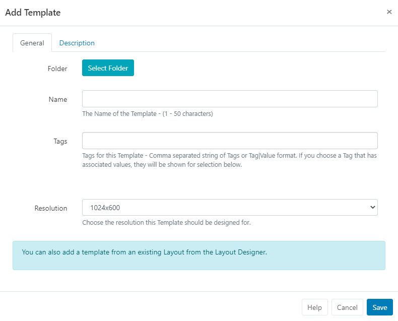
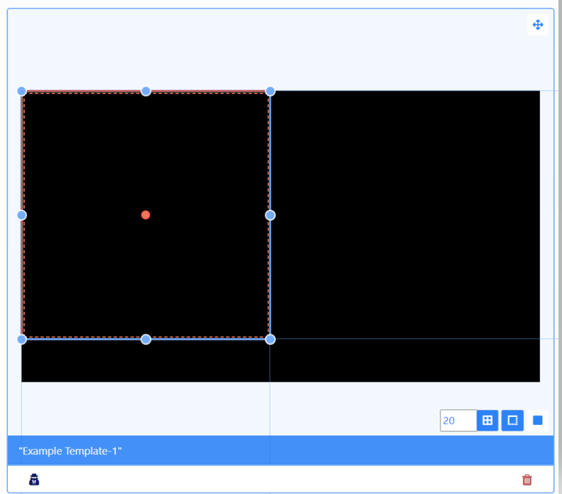
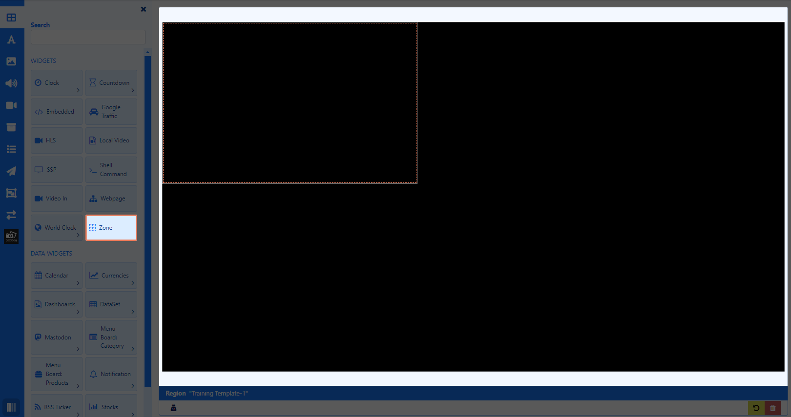
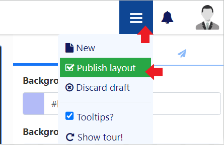
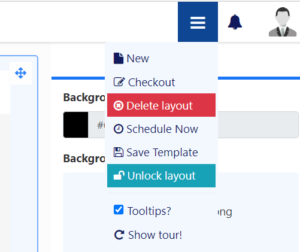

Templates
Use Templates to speed up the design process and ensure a corporate standard is maintained.
Feature Overview:
- Use existing published Layout designs to easily save as Templates.
- Create and manage Templates from a dedicated page for easier management.
- Add Zones to Templates to act as content placeholders on a Layout.
- Set Share options to restrict User access to selected zones on a Template.
- Show Published Templates for selection in the Layout Editor.
- Speed up the entire Layout design process for all Users.
- Apply a standardised look to all Layouts.
Create new Templates or save your existing Layout designs to use as Templates for future Layouts.
Create Template
Templates are created by selecting Templates under the Design section of the main CMS menu.
- Select the Add Template button and complete the form fields.

Folders are used to organise, search and easily Share User objects with other Users/User Groups. Templates saved to a Folder will inherit the access options applied to that Folder.
If Users should also have access to the content of the Template (image media files for example), ensure that these are also saved to the same Folder!
-
Give your Template a Name for easy identification in the CMS and include optional Tags.
-
Select the Resolution.
On Saving, the Layout Editor will automatically open with one full size Zone.
Zones are used to define areas on a Layout which content can be added to.
If you don’t want to include any Zones and add content directly to the Template, remove the Zone from the canvas by right clicking and selecting Delete. Add content in the same way as creating a Layout.
Adding Zones
Zones are only available for use with Templates!
- Click anywhere on the zone to resize and position:

Use the buttons, in the bottom right to select to Snap to Grid, Snap to Borders or Snap to Elements for easier positioning when adding items.
Zones can be added from the toolbar:
- Click on the top Widget button.

- Select the Zone and drag and drop or click to add.
- Resize and Position.
Set to Loop only if the Zone contains a Widget that needs to update periodically (e.g. RSS Ticker) and it needs to update more frequently than the duration of the overall Layout.
Layering
From the Properties Panel, select the Positioning tab to set Layering for overlapping Zones/ added content.
Right click to show a Context Menu and easily move items backwards and forwards.
Sharing options are particularly useful if you want a User to only have access to a section of the Layout to manage.
Add both content from the Toolbox and Zones to build your Template design.
Adding multiple media items to one zone will automatically create a Playlist!
Once your Template is complete, use the menu at the top of the editor to Publish:

Published Templates will show for selection from the Toolbox of the Layout Editor.
Save Layout as Template
Published Layouts can be saved as a Template from two locations:
- From the Layout Editor:
- After Publishing go back to the menu and select Save Template:

- From the Layouts grid:
- Use the row menu for a Published Layout and select Save Template.
Complete all relevant form fields to save the selected Layout as a Template.
Optionally use the tick box to also include all added Widgets to the Template!
- Save
Layouts that are saved as a Template can be viewed and edited from the Templates grid under the Design section of the main CMS menu.
Tagging a Layout as a ‘Template’ will also add your designs to your Template list!
Row Menu
All Templates have a row menu where Users can access a list of actions/shortcuts.
- Notable settings are listed below:
Alter Template
Select to make design changes to the Template in the Layout Editor.
Checkout
To make edits to a Published Template click to Checkout and create a draft. Once edited the Template can be published to make the changes permanent overwriting the existing Template. Discard will revert the Template back to its original published state.
Take your time with any edits you need to make as using Checkout ensures that no changes are made to your published version or shown on scheduled Displays until you choose to do so. Publish confirms changes have been made and will overwrite your published version. Discard will delete the draft with the published version remaining untouched.
Publish
Publish will ensure that the Template is shown for selection from the Toolbox.
Discard
Discard all changes made to a draft and revert back to the previous Published version.
Share
Set Share options for User/User Group access to individual Templates.
Export
Export the Template including all associated Widgets/Media/DataSet structures to a ZIP file, so it can be easily shared.
When exporting a Template, all assigned Layout, Playlist and Media Tags will be exported. Select the Import Tags option to add these Tags on Layout Import.
Use the With Selected option at the bottom of the Templates grid to perform bulk actions for multiple Templates!